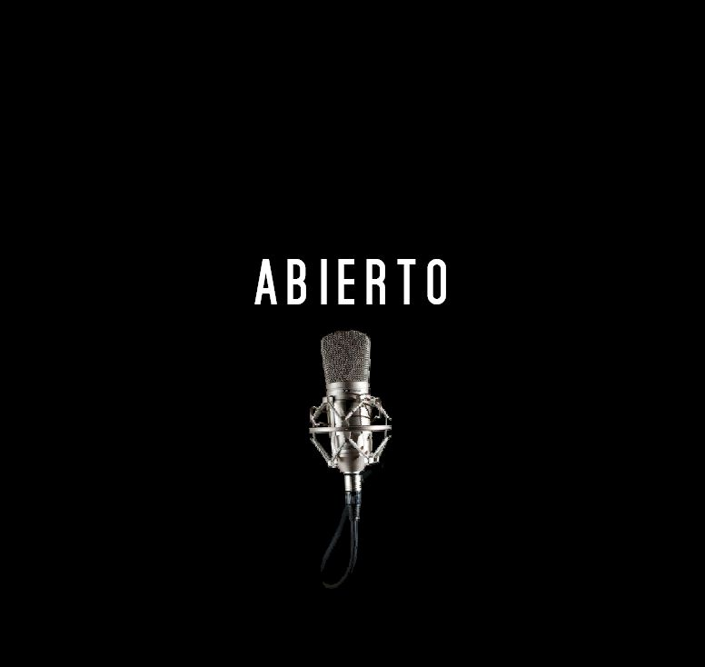
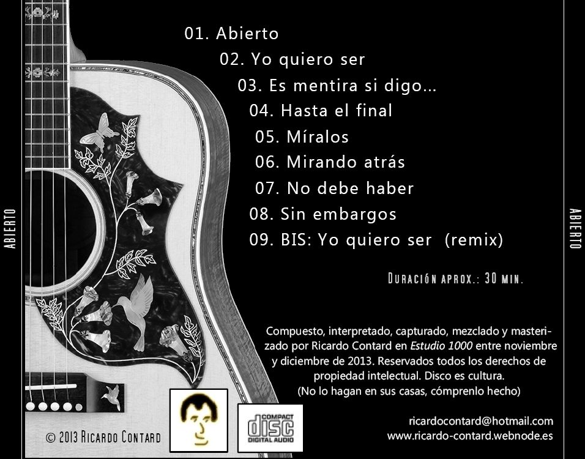

Atrás
Abierto (2013)

Tu navegador no soporta HTML5 audio.
Abierto
Yo quiero ser
Es mentira si digo
Hasta el final
Míralos
Mirando atrás
No debe haber
Sin embargos
Yo quiero ser (remix)
Grabado en estudio local. Todos los temas compuestos e interpretados por Ricardo Contard.
Gracias a todos los que colaboraron y acompañaron este proyecto musical.
